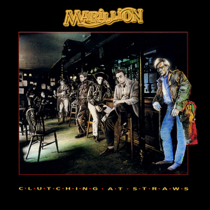
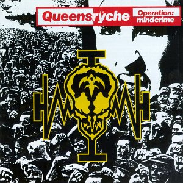
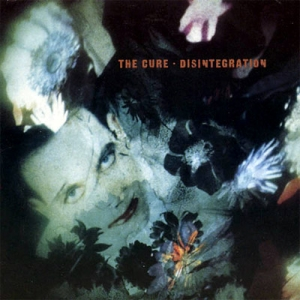
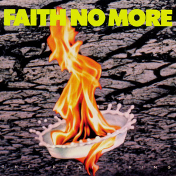

Classic albums from the 80s
Tears For Fears
Songs From The Big Chair

- Release date: 25 February 1985
- Genre: New Wave
- Read more on Wikipedia
Marillion
Clutching at Straws

- Release date: 22 June 1987
- Genre: Neo-progressive Rock
- Read more on Wikipedia
Iron Maiden
Seventh Son of a Seventh Son

- Release date: 11 April 1988
- Genre: Heavy Metal
- Read more on Wikipedia
Queensryche
Operation: Mindcrime

- Release date: 3 May 1988
- Genre: Progressive Metal
- Read more on Wikipedia
The Cure
Disintegration

- Release date: 2 May 1989
- Genre: New Wave
- Read more on Wikipedia
Faith No More
The Real Thing

- Release date: 20 June 1989
- Genre: Alternative Metal
- Read more on Wikipedia